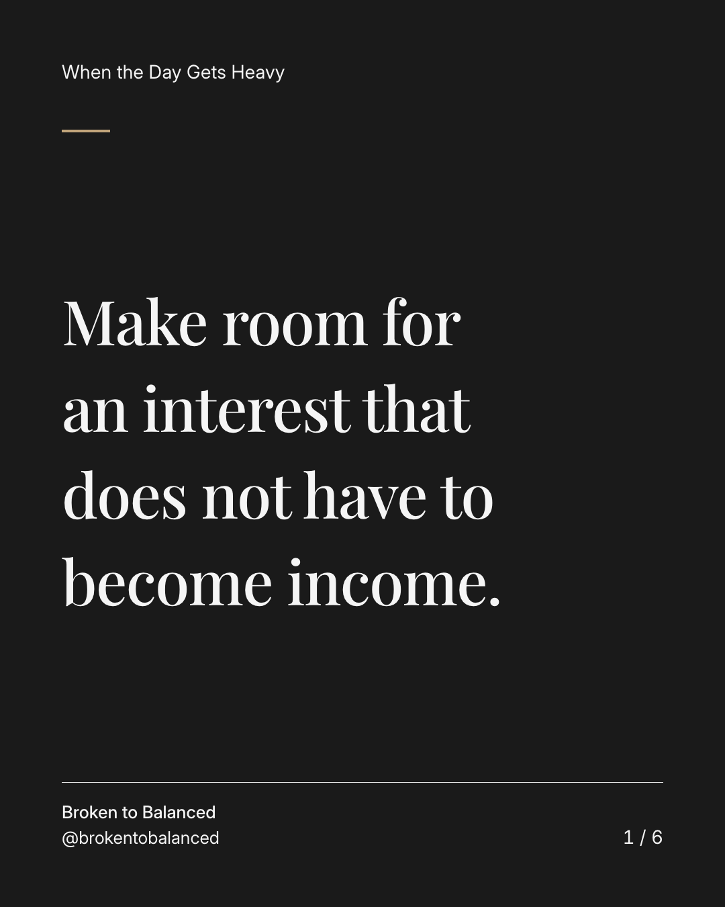
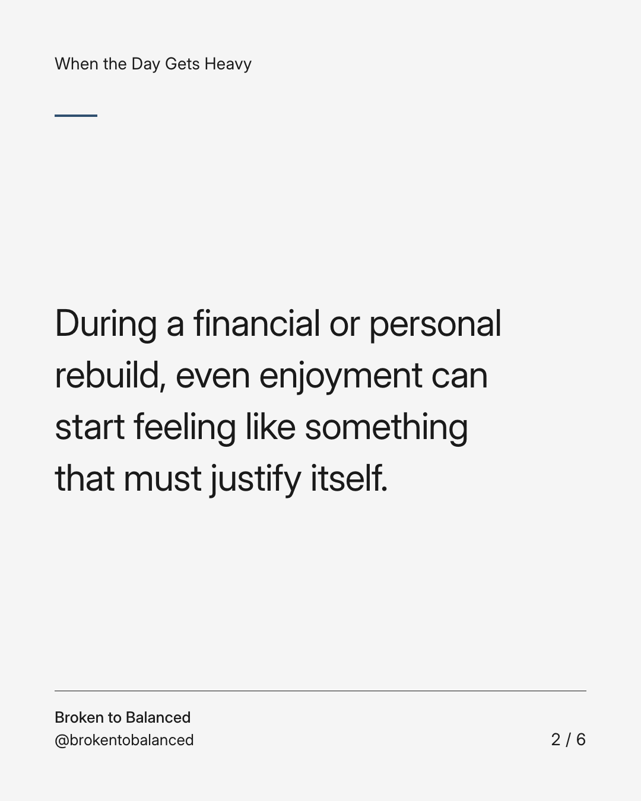
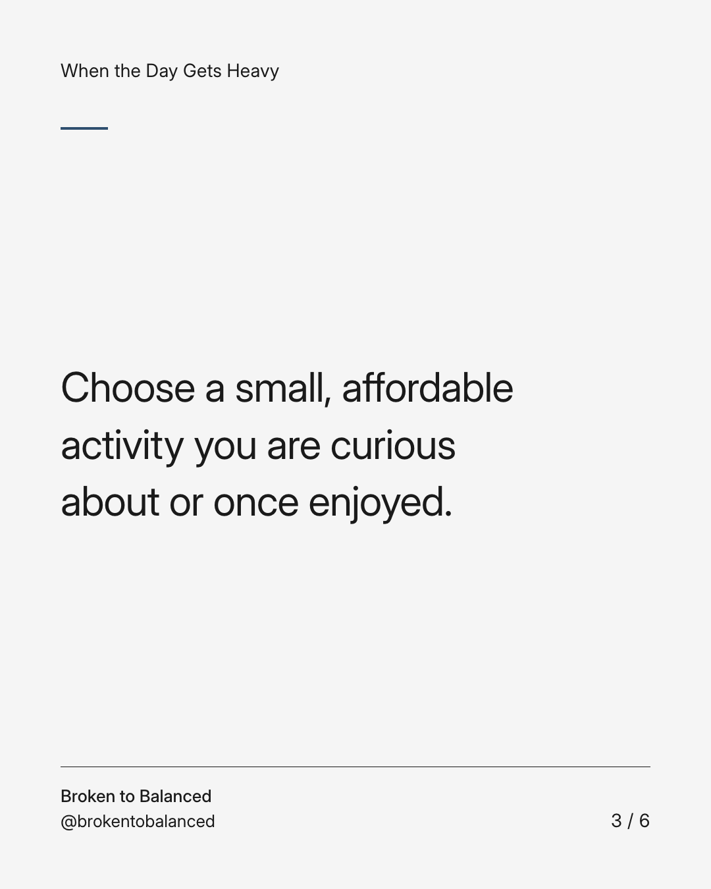
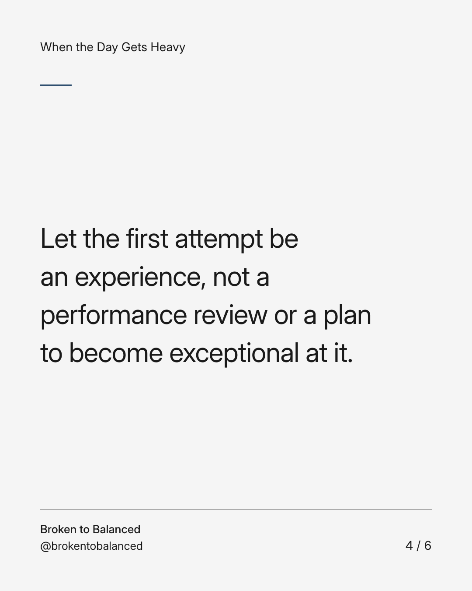
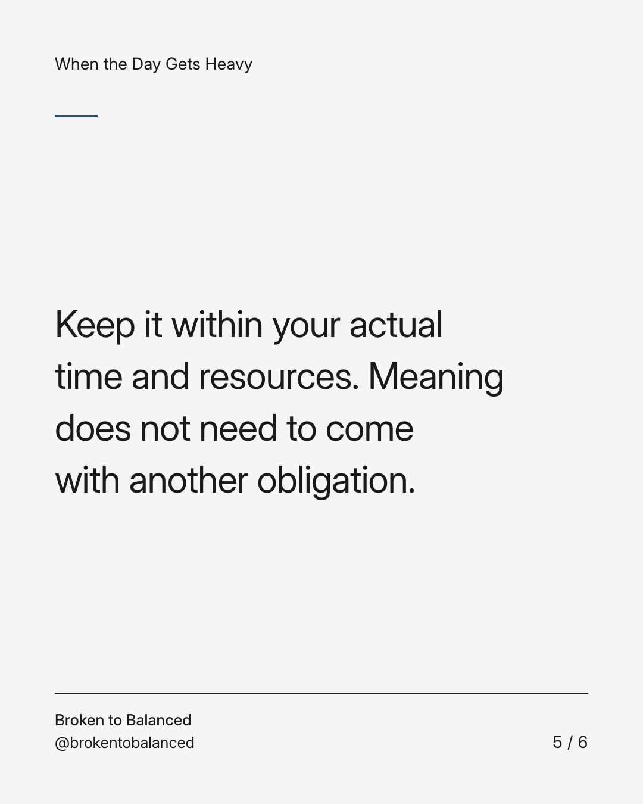
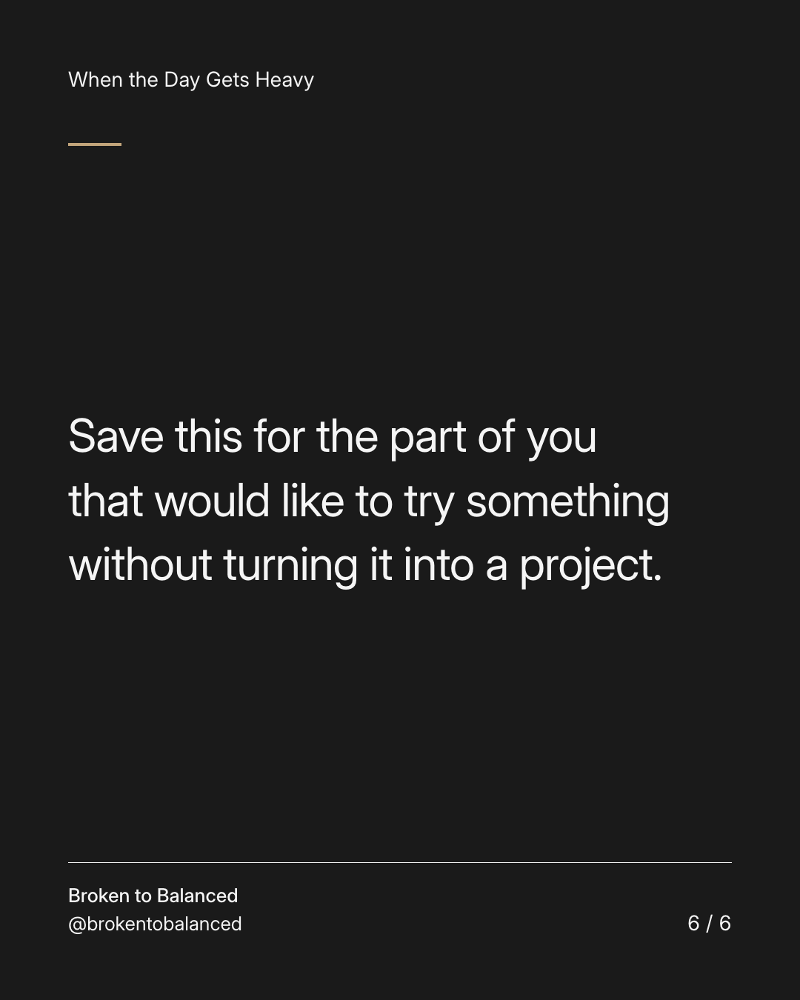

Exact text and accessibility text
Make room for an interest that does not have to become income.
Slide 1 of 6. Make room for an interest that does not have to become income.


Exact text and accessibility text
During a financial or personal rebuild, even enjoyment can start feeling like something that must justify itself.
Slide 2 of 6. During a financial or personal rebuild, even enjoyment can start feeling like something that must justify itself.


Exact text and accessibility text
Choose a small, affordable activity you are curious about or once enjoyed.
Slide 3 of 6. Choose a small, affordable activity you are curious about or once enjoyed.


Exact text and accessibility text
Let the first attempt be an experience, not a performance review or a plan to become exceptional at it.
Slide 4 of 6. Let the first attempt be an experience, not a performance review or a plan to become exceptional at it.


Exact text and accessibility text
Keep it within your actual time and resources. Meaning does not need to come with another obligation.
Slide 5 of 6. Keep it within your actual time and resources. Meaning does not need to come with another obligation.


Exact text and accessibility text
Save this for the part of you that would like to try something without turning it into a project.
Slide 6 of 6. Save this for the part of you that would like to try something without turning it into a project.
Exact caption
Plain-text fallback: select and copy the caption.